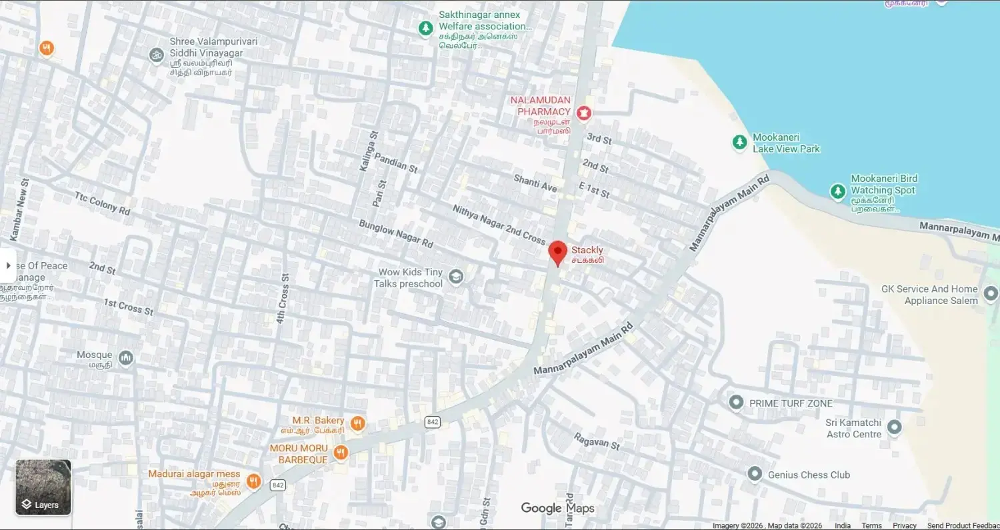

Have architectural engineering questions regarding macro sensor setups, drainage tracking loops, or automated webhook APIs? Reach out to our technical dispatch network for customized deployment mapping protocols.


Mon - Sun: 9:00 AM - 7:00 PM IST
Submit your production parameters. Form boundaries illuminate on active focus paths.
Stackly coordinates local network telemetry, hardware node calibration audits, and crop data infrastructure optimization scripts natively from our flagship Salem operations base.


Deploy secure sensor clusters across your soil layouts in minutes. No data engineering background required.